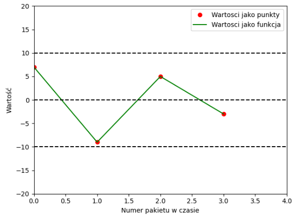
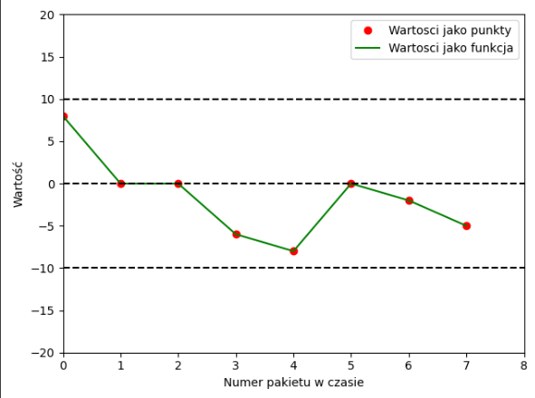
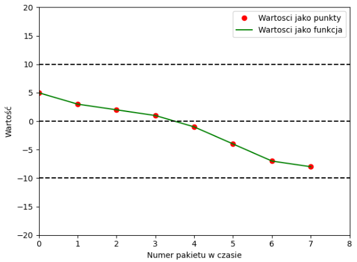
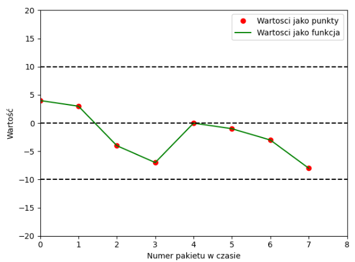
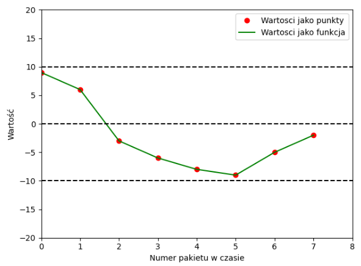
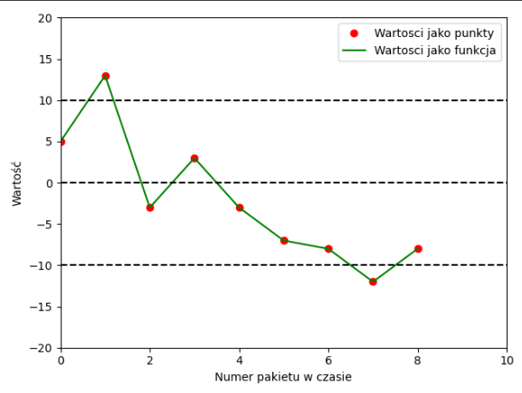
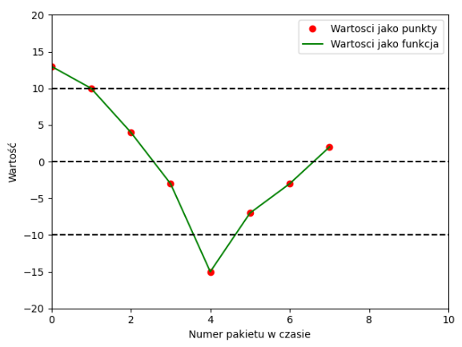
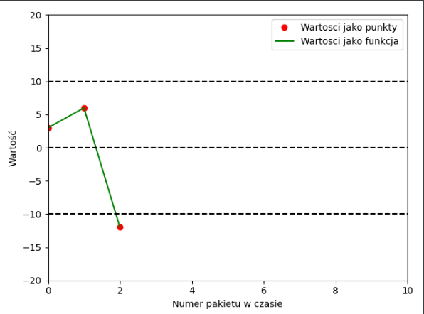

Opis
Dokumentacja programu z lab 2 - Przecięcia zera.
Kod
Program został napisany zgodnie ze standardem c99, kompilator GNU GCC.
Kompilacja
gcc -std=c99 -Wall -pedantic -o out/main.out main.c
Uruchamianie
cut -d ' ' -f 2- dane/przeciecia_zera1.txt | cut -d '.' -f1 | ./out/main.out
Biblioteki, stałe
Biblioteki
#include <stdio.h>
#include <stdlib.h>
Stałe
#define MIN -10
#define MAX 10
#define FMIN 8
#define FMAX 12
#define SIZE_OF_PACKAGE 4
#define END 99
Została biblioteka zaimplementowana biblioteka standardowa. Co do wartości stałych są to wartości zakresów poprawnych oraz wartość wielkości pakietu.
| Nazwa | Wartość | Opis |
|---|---|---|
| MIN | -10 | Wartość minimalna zakresu poprawnych danych |
| MAX | 10 | Wartość maksymalna zakresu poprawnych danych |
| FMIN | 8 | Wartość minimalna zakresu poprawnej częstotliowości |
| FMAX | 12 | Wartość maksymalna zakresu poprawnej częstotliowości |
| SIZE_OF_PACKAGE | 99 | Wielkość pakietu danych |
| END | 99 | Wartość kończąca działanie programu |
Zmienne globalne, struktury
Struktura enum
typedef enum{
False = 0,
True = 1,
None = 2,
} sign;
Zmienne globalne
int number;
int numberAmount = 0;
int intersectionAmount = 0;
sign previousSign = None;
sign actuallySign = None;
Użyłem strukturę enum, która jest typem wyliczeniowym i dla kolejnych argumentów przyjmuje rosnące wartości. Wartości globalne to aktualnie odczytany numer, ilość wartości w pakiecie oraz liczba przecięć. Przechowywany w strukturze enum jest znak.
Struktura
| Nazwa | Wartość | Opis |
|---|---|---|
| False | 0 | Wartość ta jest przyjmowana dla liczby ujemnej |
| True | 1 | Wartość ta jest przyjmowana dla liczby dodatniej |
| None | 2 | Wartość przejściowa |
Zmienne globalne
| Nazwa | Wartość | Opis |
|---|---|---|
| number | null | Przechowywany aktualna wartość |
| numberAmount | 0 | Ilość liczb liczących w pakiecie |
| intersectionAmount | 0 | Ilość przecięc zera |
| previousSign | None | Znak poprzedniej liczby |
| actuallySign | None | Znak aktualnie badanej liczby |
Sprawdzanie odczytanej wartości
if (scanf("%d", &number) == 1)
Warunkiem wykonania jest wczytanie przez scanf wartości typu int, czyli puste linie są nie brane pod uwagę.
Iteracja po pakiecie danych
numberAmount++;
Liczba danych aktualnie liczonego pakietu zostaje iterowana.
Sprawdzenie wartości kończącej program
if (number == END){
break;
}
Program zostaje zakończony po odczytaniu wartości END deklarowanej wcześniej.
Sprawdzenie zakresu odczytanej wartości
if (number >= MIN && number <= MAX)
Program sprawdza czy odczytana liczba mieści się w ramie wcześniej sprecyzowanego zakresu.
Znak aktualnej, poprzedniej liczby
Przypadek zera lub zer
Pętla w pętli
if (numberAmount > 1)
if (number == 0)
actuallySign = previousSign;
Tutaj przekazywana jest informacja o poprzednim znaku w przypadku gdy pojawia się zero. Zero działa jak kurer przekazujący znak znajdujący się przed sekcją zera lub zer.
Przypisanie znaku
if (number > 0) actuallySign = True;
else if (number < 0) actuallySign = False;
W przypadku gdy liczba jest większa od zera znak zmieniamy na True, w przeciwnym razie na False.
Przecięcie zera
if (((actuallySign ^ previousSign) == 1) &&
previousSign != None && actuallySign != None)
intersectionAmount++;
Przecięcie zera występuje jeżeli poprzednia wartość i aktualna są różne od None oraz gdy alternatywa rozłączna znaków jest równa 1.
Alternatywa rozłączna XOR
| P | Q | P^Q | |
|---|---|---|---|
| 0 | 0 | 0 | |
| 0 | 1 | 1 | |
| 1 | 0 | 1 | |
| 1 | 1 | 0 |
Przepis znaku
if (numberAmount != 0) previousSign = actuallySign;
Gdy znak został juz sprawdzony dla danej liczby jest przekazywany dla kolejnej w zmiennej previousSign.
Wielkość pakietu
if (numberAmount == SIZE_OF_PACKAGE)
Gdy ilość liczb jest równa wielkości pakietu następuje zamknięcie pojedyńczego pakietu danych.
Częstotliowość
if ( FMIN > intersectionAmount || FMAX < intersectionAmount){
printf("Nieprawidlowy puls: %d \n",intersectionAmount);
} else {
printf("Prawidlowy puls: %d \n",intersectionAmount);
}
Jeżeli częstotliowość nie mieści się w danym przedziale pokazana jest informacja o nieprawidłowej częstotliości w przeciwnym wypadku o poprawnej.
Przywrócenie danych domyślnych
number = 100;
numberAmount = 0;
intersectionAmount = 0;
previousSign = None;
actuallySign = None;
Przywracane są dane do stanów początkowych aby można było bezbłędnie sprawdzić kolejny pakiet.
Testy
import matplotlib.pyplot as plt
# Open file
file = open("path")
data = []
i = 0
Lines = file.readlines()
# Getting value from file and packing to array
for line in Lines:
if line != "\n":
i += 1
if int(line) != 99:
data.append(int(line))
plt.plot(data, 'ro', label='Wartosci jako punkty')
plt.plot(data, 'g', label='Wartosci jako funkcja')
plt.plot([0, 1000], [-10, -10], 'k--')
plt.plot([0, 1000], [10, 10], 'k--')
plt.plot([0, 1000], [0, 0], 'k--')
# Adding extra info
plt.xlabel("Numer pakietu w czasie")
plt.ylabel("Wartość")
plt.legend()
# Main plot size
plt.axis([0, 10, -20, 20])
plt.show()
Wykresy sporzadzone zostały w języku python. Wersja 3.7.4, biblioteka matplotlib. Każdy test wykonany takim samym kodem.
Test 1
Dane
7
-9
5
-3
99

Test 2
Dane
8
0
0
-6
-8
0
-2
-5
99

Test 3
Dane
5
3
2
1
-1
-4
-7
-8
99

Test 4
Dane
4
3
-4
-7
0
-1
-3
-8
99

Test 5
Dane
9
6
-3
-6
-8
-9
-5
-2
99

Test 6
Dane
5
13
-3
3
-3
-7
-8
-12
-8
99

Test 7
Dane
13
10
4
-3
-15
-7
-3
2
99

Test 8
Dane
3
6
-12
99
